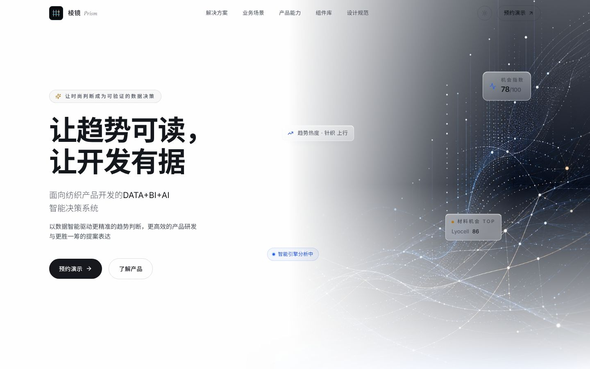
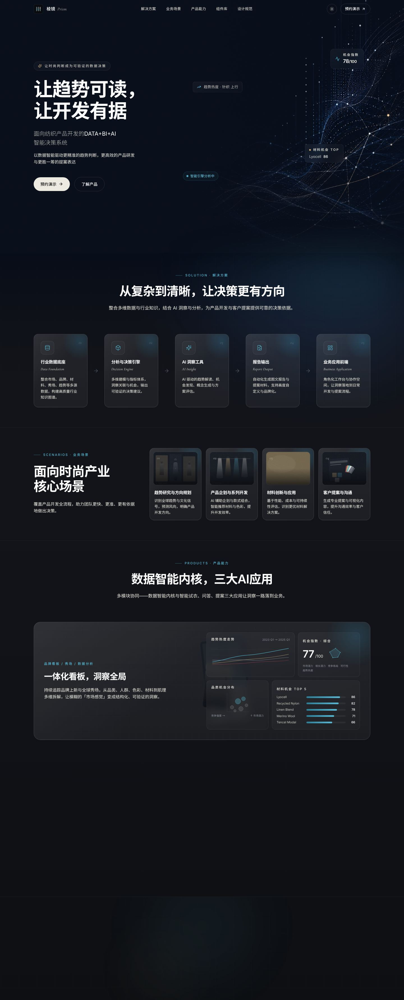
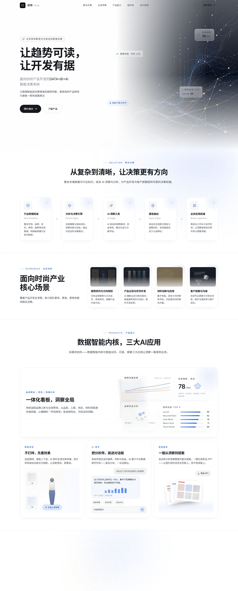
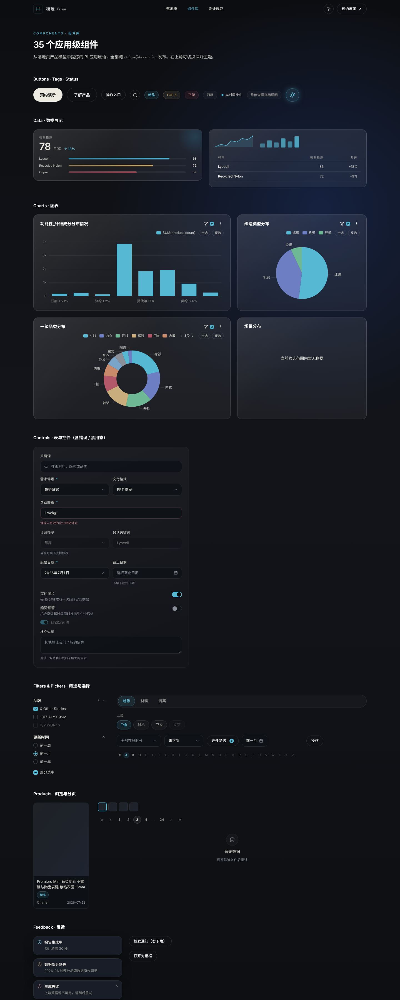
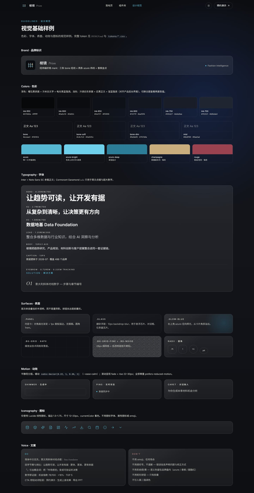
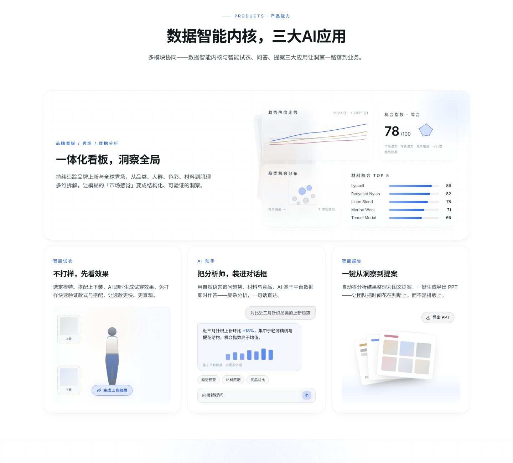

index / case 04 — design system + landing page
Prism
Brand, design system and landing page for a textile AI platform, readable by agents.


DARKLIGHT41Vue primitives
2themes from one token set
3readers: designers, engineers, agents
1working accent per theme
01Brand
Fashion mood, data discipline.
Obsidian surfaces, bone text, hairlines; numbers as imagery. One accent per theme, no emoji.


02System
Docs built with the system.
Component and guideline pages render the same Vue package, so docs can’t drift.


03Agents
A front door for agents.
DESIGN.md, SKILL.md, AGENTS.md: agents build new pages without guessing.
design-system/
├─ readme.md for people: brand, voice, visual foundations
├─ DESIGN.md for tools: tokens & components, open format
├─ SKILL.md for agents: an invocable design skill
├─ AGENTS.md for agents: what to read before touching anything
├─ tokens/ colors · typography · effects
└─ templates/vue-package/
├─ src/components/ui/ 41 primitives + a .prompt.md recipe for each
└─ src/pages/ landing · components · guidelines

Repository and package on request.
Book a walkthrough →